Left: Steward Observatory Center: Large Binocular Telescope (LBT), photographed by graduate student Wiphu Rujopakarn Right: Multiple Mirror Telescope (MMT)
Welcome to Steward Observatory!
Congratulations on having been accepted to the
Astronomy
Graduate Program at the
University of Arizona's Steward Observatory in Tucson!
This page will help you to plan your visit and answer common questions.
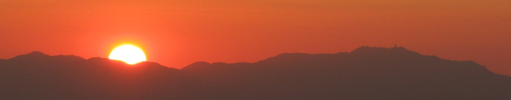
Sunset behind the mountains near Kitt Peak National Observatory, taken from the MMT dome on Mt. Hopkins
First Things First
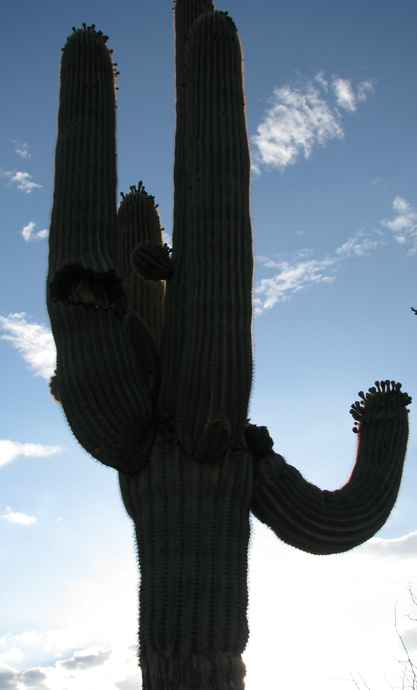
A Saguaro cactus, common around Tucson
To figure out which grad school is right for you, you should visit the
schools! Most astronomy departments will cover your (reasonable)
expenses.
- First, figure out when you want to come visit us. We
strongly encourage you to come during our prospective student week:
February 28—March 2. If this week doesn't work for you,
let us know when you can come, and we will make it happen.
Please try and stay for two full weekdays; this will be enough time for
us to introduce you to the faculty and the grad students.
- Second, when you have purchased your plane tickets, forward the
travel itinerary email that you recieve from the airline to Treva Dickerson.
She will help you take care of the reimbursement paperwork when you
visit. If your visit is a part of a multi-leg tour, we can reimburse
you for a part of the trip. Also email Johanna Teske with travel
details so we can arrange for hosts, etc.
- Third, check out the
list of faculty and their research interests. We also
recommend that you do an ADS
and / or astro-ph
search on the faculty members you are interested in meeting to check out
their recent work. Keep thinking about who you'd really like to meet
and what research topics would you like to pursue. Feel free to give
your grad student host an update when they call you prior to your visit,
and we'll try to add those professors (and others with related
interests) to your schedule.
Visit Details
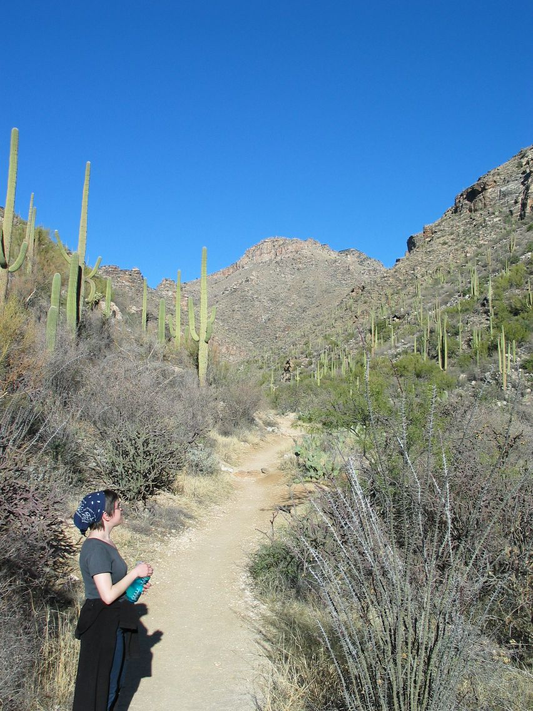
Former grad student Beth Biller hiking at Seven Falls, just North of Tucson
- Where will I stay during my visit?
We will arrange
a grad student to host you based on your interests and lifestyle. This
person will provide for your room, board, and transportation needs.
- Tell me about the department visit...
You will also be
assigned a "faculty host", who will arrange your schedule. You'll have
half-hour meetings with faculty members, especially those with similar
research interests to yours, and those you ask to meet. This shouldn't
be stressful! It's a chance for you to meet potential research advisors
and learn about current research at Steward. Ask, ask, ask!
Many of us at Steward gather for Morning Coffee Mondays,
Wednesdays, and Fridays at 10:30am. Topics of discussion range from the
mundane to the daily astro-ph crop. You will obviously be welcome to
show up and chat with grad students, post-docs, and faculty, or if you
like you can just listen in. At the more formal level, there is never
a shortage of cutting-edge lectures, lunch talks, or research group
meetings to attend if you like.
Finally, you will probably be
treated to a big dinner / party / BBQ with the grad students, as well as
smaller dinners or get-togethers that your host will arrange. (Note
that the department reimburses our expenses, so you needn't worry about
that!)
- How's the weather in Tucson?
Spring in Tucson is
wonderful! We should have pleasant, dry weather for your visit—highs
around 70°F and lows around 40°F. Bring a light jacket for
dinners outside and a fleece for the telescope visit. Below is climate
information for Tucson by month, taken from Wikipedia. Or, check out typical
Tucson weather month-by-month or local forecast.
| Climate data for Tucson, Arizona (Tucson Int'l), 1981-2010 normals |
| Month |
Jan |
Feb |
Mar |
Apr |
May |
Jun |
Jul |
Aug |
Sep |
Oct |
Nov |
Dec |
Year |
| Record high °F (°C) |
88
(31) |
92
(33) |
99
(37) |
104
(40) |
111
(44) |
117
(47) |
114
(46) |
112
(44) |
107
(42) |
102
(39) |
94
(34) |
85
(29) |
117
(47) |
| Average high °F (°C) |
66.1
(18.9) |
69.1
(20.6) |
74.8
(23.8) |
82.8
(28.2) |
92.2
(33.4) |
101.0
(38.3) |
100.4
(38.0) |
98.1
(36.7) |
95.2
(35.1) |
85.4
(29.7) |
74.2
(23.4) |
65.5
(18.6) |
83.73
(28.74) |
| Average low °F (°C) |
39.8
(4.3) |
42.1
(5.6) |
46.2
(7.9) |
52.0
(11.1) |
60.5
(15.8) |
69.3
(20.7) |
74.4
(23.6) |
73.3
(22.9) |
68.6
(20.3) |
57.3
(14.1) |
46.1
(7.8) |
39.1
(3.9) |
55.73
(13.18) |
| Record low °F (°C) |
6
(-14) |
17
(-8) |
20
(-7) |
27
(-3) |
32
(0) |
43
(6) |
49
(9) |
55
(13) |
43
(6) |
26
(-3) |
19
(-7) |
10
(-12) |
6
(-14) |
| Precipitation inches (mm) |
0.93
(23.6) |
0.85
(21.6) |
0.73
(18.5) |
0.31
(7.9) |
0.23
(5.8) |
0.20
(5.1) |
2.25
(57.2) |
2.39
(60.7) |
1.28
(32.5) |
0.88
(22.4) |
0.57
(14.5) |
0.93
(23.6) |
11.56
(293.6) |
| Snowfall inches (cm) |
0.3
(0.8) |
0.2
(0.5) |
0
(0) |
0
(0) |
0
(0) |
0
(0) |
0
(0) |
0
(0) |
0
(0) |
0
(0) |
0
(0) |
0.1
(0.3) |
0.6
(1.5) |
| Avg. precipitation days (≥ 0.01 in) |
4.9 |
4.1 |
3.9 |
2.0 |
1.8 |
1.7 |
9.8 |
9.7 |
4.4 |
3.2 |
2.7 |
4.7 |
52.9 |
| Avg. snowy days (≥ 0.1 in) |
0.2 |
0.2 |
0 |
0 |
0 |
0 |
0 |
0 |
0 |
0 |
0 |
0.1 |
0.5 |
| Sunshine hours |
260.4 |
259.9 |
319.3 |
357.0 |
399.9 |
396.0 |
344.1 |
334.8 |
315.0 |
306.9 |
264.0 |
244.9 |
3,802.2 |
| Source no. 1: NOAA , The Weather Channel (Records) |
| Source no. 2: HKO (sun only, 1961—1990) |
- The Fun Stuff
Besides meeting the faculty and grad
students, you will get a tour of our Mirror Lab where we cast some of
the world's biggest primary telescope mirrors. We are also planning
other activities, such as a tour of the MMT or eyepiece observing at
Kitt Peak.
You are welcome to join us out to clubs / bars or to
check out some live music. If you are an active sort, we can take you
rock climbing with grads and post-docs. Hiking through the beautiful
Sonoran desert or surrounding mountains is very popular this time of
year, and we frequently organize game nights. There are lots of
possibilities; just let us know what your interests are!
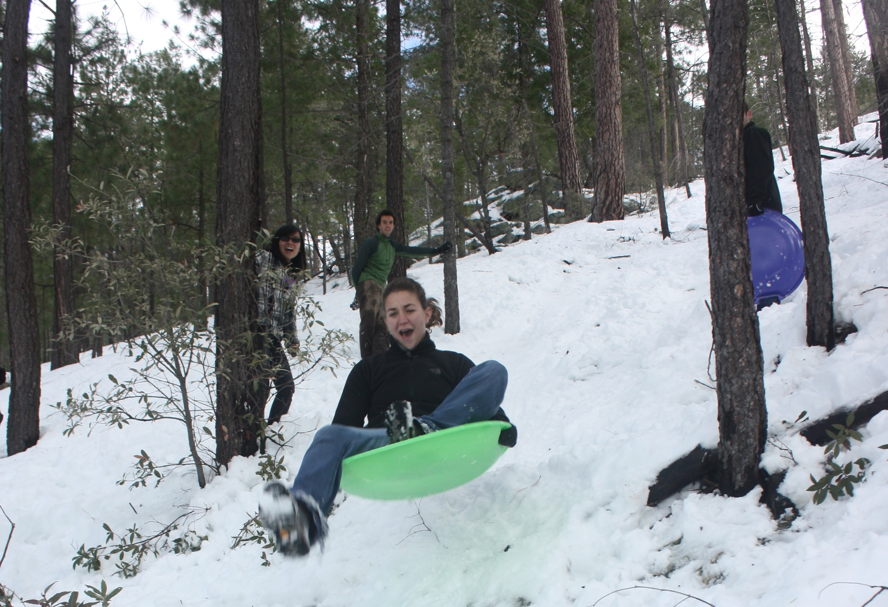 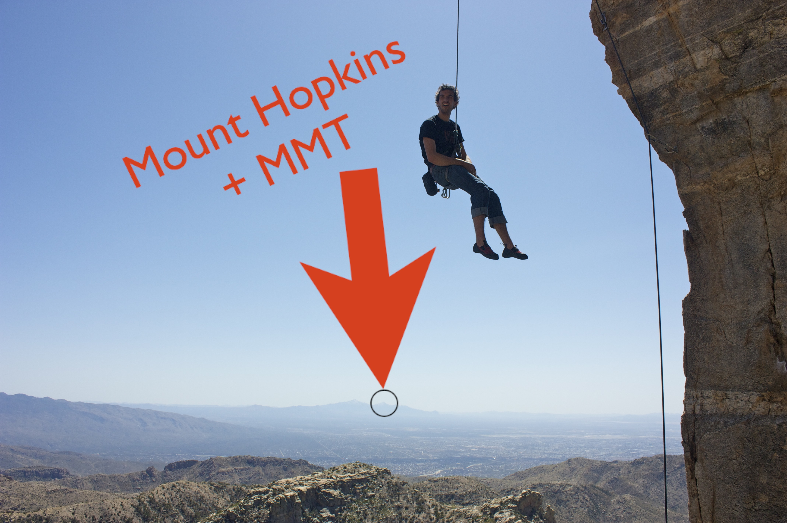
Left: Graduate student Evan
Schneider catches air on nearby Mount Lemmon in 2011 as concerned classmates
look on Right: Graduate student Jordan Stone climbing during
his prospective visit in 2009
Funding, The Prelim, Mentoring, and Other Important Things
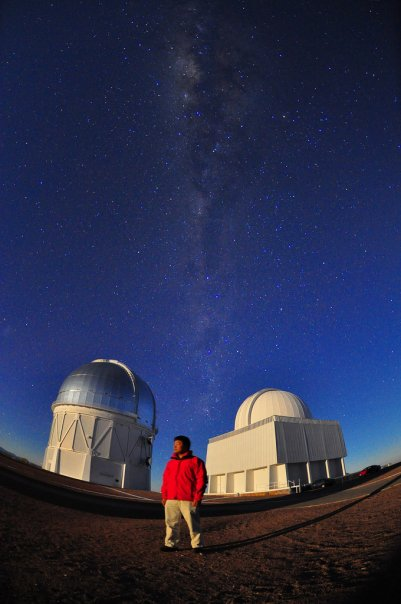
Graduate student Wiphu Rujopakarn observing at Magellan
You can find an elaborate guide to the Graduate Academic Program here
- please take a careful look at it for it contains very important
information! The info below is just a brief summary. The Graduate
Program Advisor is Ann
Zabludoff (mail); you will likely
meet her during your visit.
- Funding
With the admission at Steward you are guaranteed
5 years of funding as either Research Assistant (RA) or Teaching
Assistant (TA). You are also given $2,500 stipend to spend at your own
discretion on research related items such as books, a laptop, conference
expenses, etc.
We are not required to do a TA during our first year which is to say we do
not teach during our first year. Most of us don't take a TA during the
second year either. We usually take TAs after we are done with most of
our classes, but we are required to do two semesters of TA as part of the
PhD program.
- Classes
As a student at Steward, you are required to
complete successfully the 5 "core" courses in astronomy: ISM & Star
Formation, Stars & Accretion, Cosmology, Galaxies, and Instrumentation
& Statistics. In addition, students are required to take another eight
graded credits of non-core courses. Core courses are taken during the
first two fall semesters. You can fulfill the non-core requirement by
choosing from a wide range of 3 credit elective and 1-2 credit seminars
that are typically offered in the spring semesters and coordinated with
the core courses offered the previous semester. The non-core requirement
can also be satisfied by taking courses offered by other departments,
including Physics, Lunar and Planetary, Biology, Chemistry, Electrical
Engineering, and Optical Sciences. You can find more details and
a sample study plan here.
- Advising and Mentoring
You are strongly encouraged to choose an advisor during the summer (over
the phone/e-mail) before you arrive in August. This allows for the
necessary payroll paperwork to be in place and helps you hit the ground
running research-wise when you arrive. You are encouraged to ask current
grad students for a candid opinion about what it's like to work with the
various faculty members before choosing.
During recent years
students have been encouraged to enlist a Mentoring Committee of 4-5
faculty members. The function of the Mentoring committee is to meet
roughly once per semester and track your progress and help you identify
and deal with problems. Eventually, your mentoring committee will evolve
into your prelim / dissertation committee.
- The Prelim
The preliminary exam consists of a written
part and an oral part. The written part is given simultaneously to all
second-year students in late January/early February of your 4th
semester. It consists of a closed and an open-book part, each eight
hours long; these are taken on consecutive days (ask current grads about
this experience—some will have just finished taking their exam on
Feb 29 as your visit begins!). After this, you schedule your oral exam
to take place sometime by the end of your 5th semester (i.e., end of
Fall of your 3rd year), where you give a presentation on your reserach
to your committee followed by a Q&A session with them afterward.
- Dissertation
Once you pass the prelim you are on your
way to the dissertation. Some people change advisors and projects,
some don't. The policy in recent years has been that the PhD should
take you about 5 years, though some people take longer. Please ask the
grads about their experience!
Meet the Department
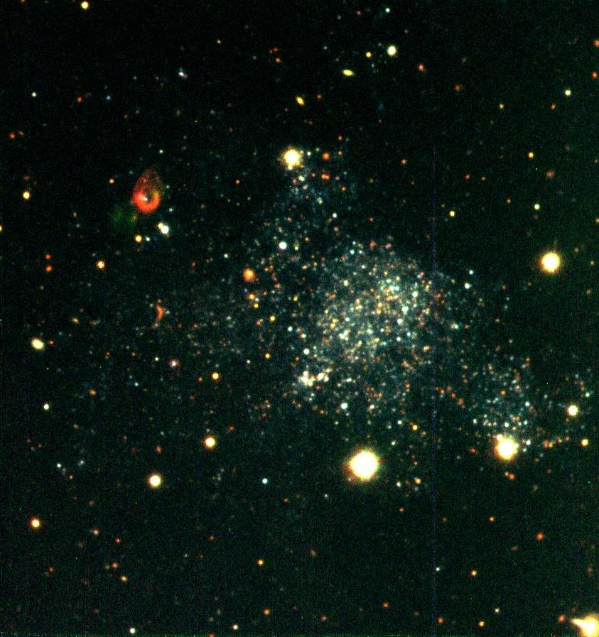
HoIX galaxy, imaged by Kris Eriksen and Jane Rigby at the VATT
- The official Grad Student list. Feel free to contact the grads with questions about their advisors, research interests, hobbies, etc.
- The official Faculty list.
- Here is a list of the Telescopes we have guaranteed time on.
Some Useful Links
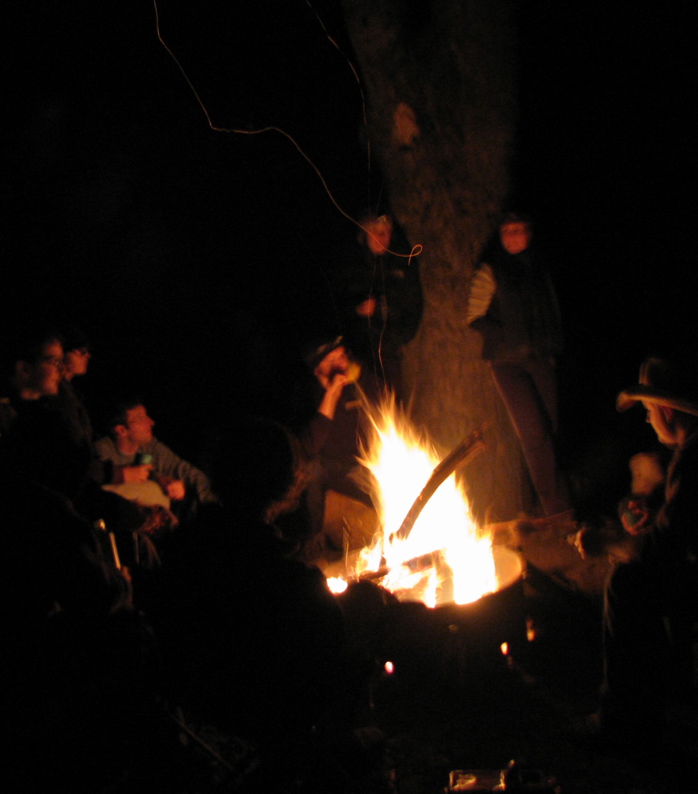
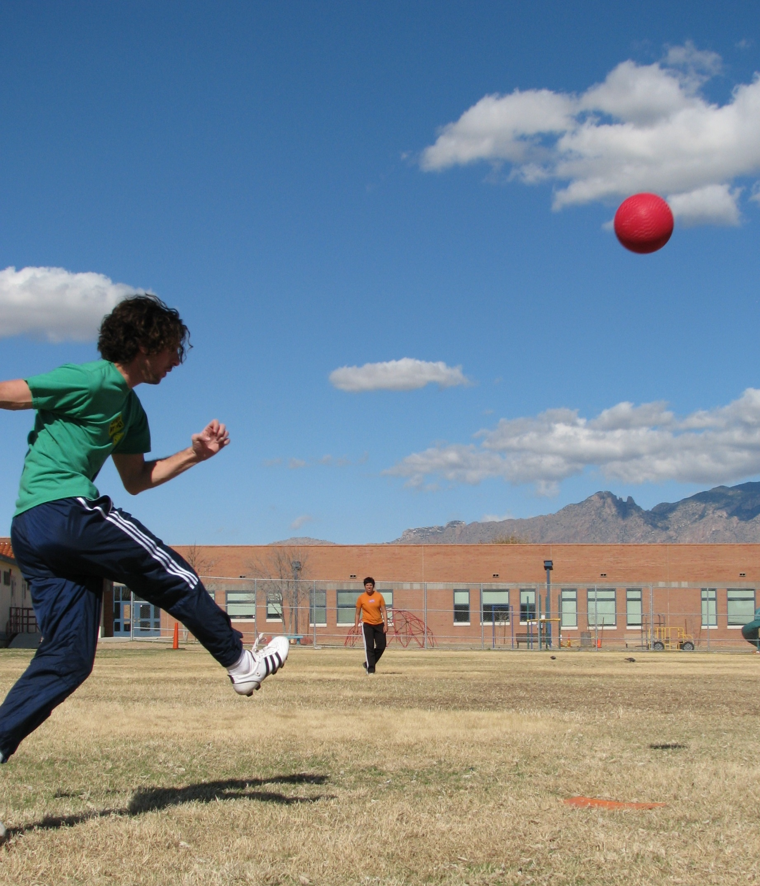
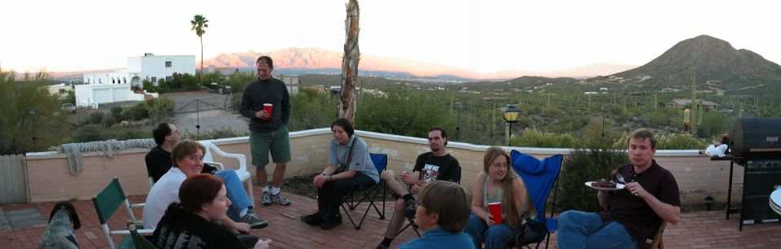
Top: Weekend camping Middle: Some Steward graduates playing kickball Bottom: Barbeque at Via Roma, former home of many grads and post-docs
Graduate School & Visiting
Steward Observatory:
Grad Student Life at Steward:
Life in Tucson, Arizona:
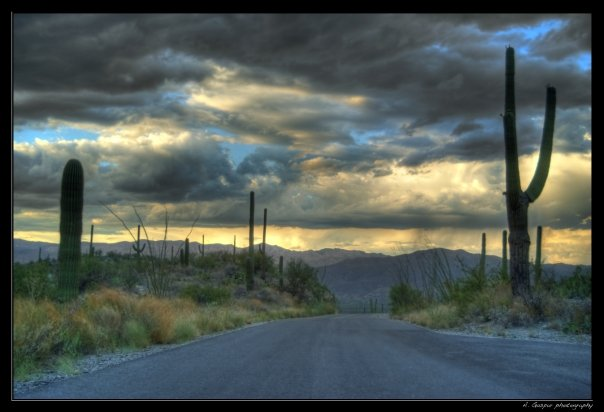
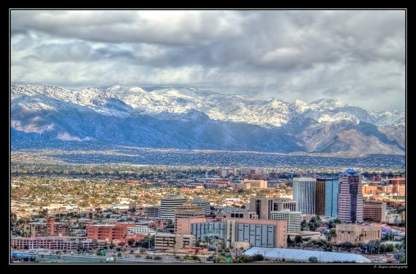
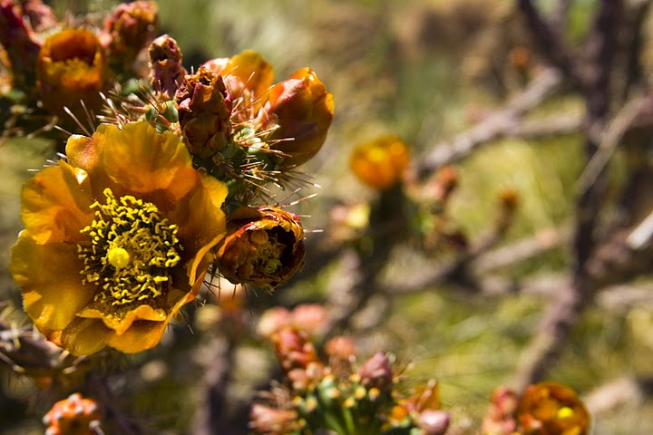
Top Left: Photo near Tucson by graduate student Andras Gaspar Top Right: Photo of the Catalina Mountains and downtown Tucson by graduate student Andras Gaspar Bottom: Flowers at the nearby Desert Museum, by James Davies